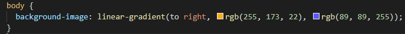

Para fazer degradê em css é muito simples, basta usar a função "Background-image", e dentro dela selecionar o parametro "Linear-Gradient()"
No linear gradient, você primeiro vai indicar a direção pra onde você quer que o degradê vá e logo em seguida você escolhe as cores que você quer que entrem no seu degradê, podem ser quantas cores você quiser, contanto que tenha mais de uma cor. Exemplo:
Nesta imagem, é possível ver que o degradê vai da esquerda para a direita, começando com a cor laranja e indo para a sua cor complementar, azul.
OBS: É possível ainda trabalhar com outras direções para o degradê, caso você queira que ele vá para a direita, basta colocar no parametro "to right", caso queira que ele vá para a esquerda, basta colocar no parametro "to left", caso queira que ele vá para o topo da página, basta colocar no parametro "to top", caso queira que ele vá para o rodapé da página, basta colocar no parametro "to bottom.
Além dessas configurações, é possível ainda trabalhar com graus, então, caso queira trabalhar com graus, basta colocar no parametro (*quantidade de graus desejada* deg), exemplo: (90deg)